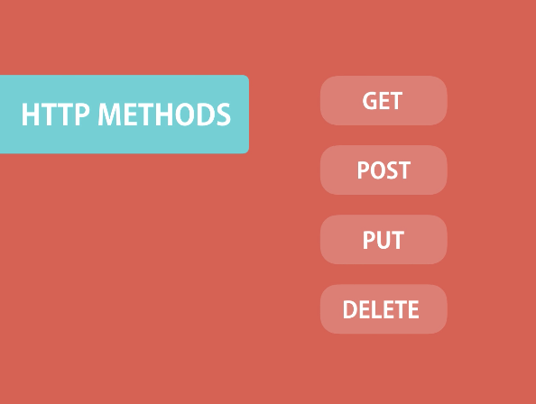
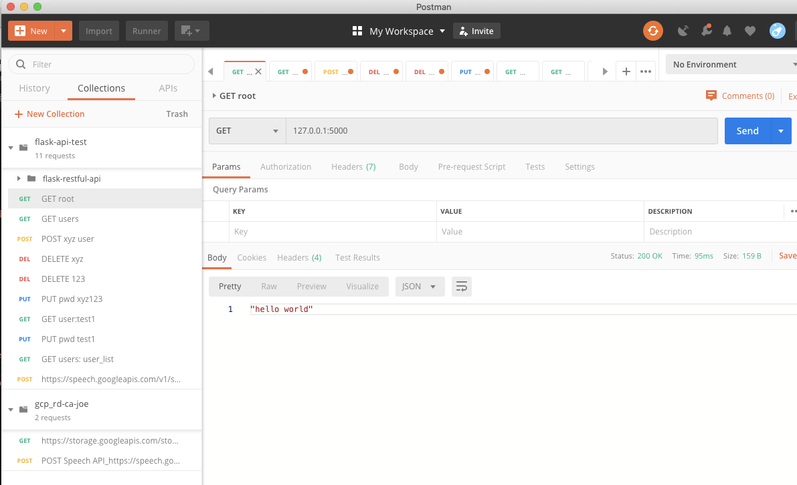
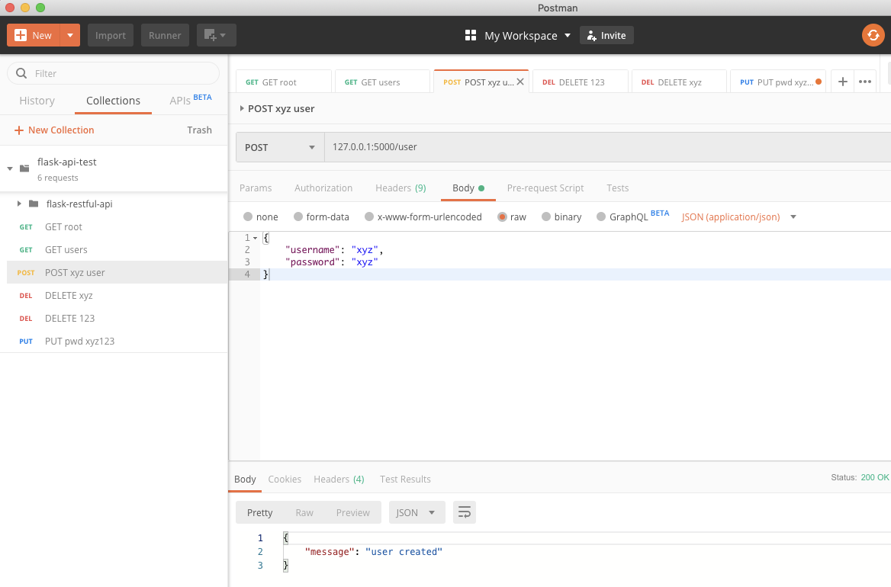
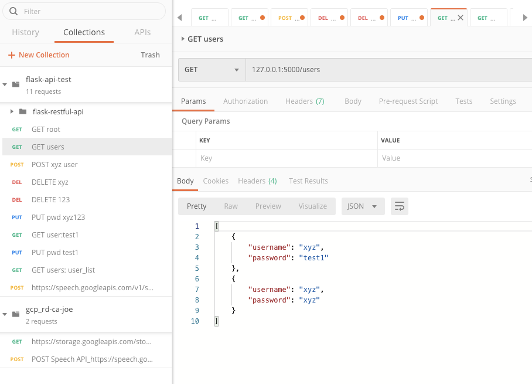
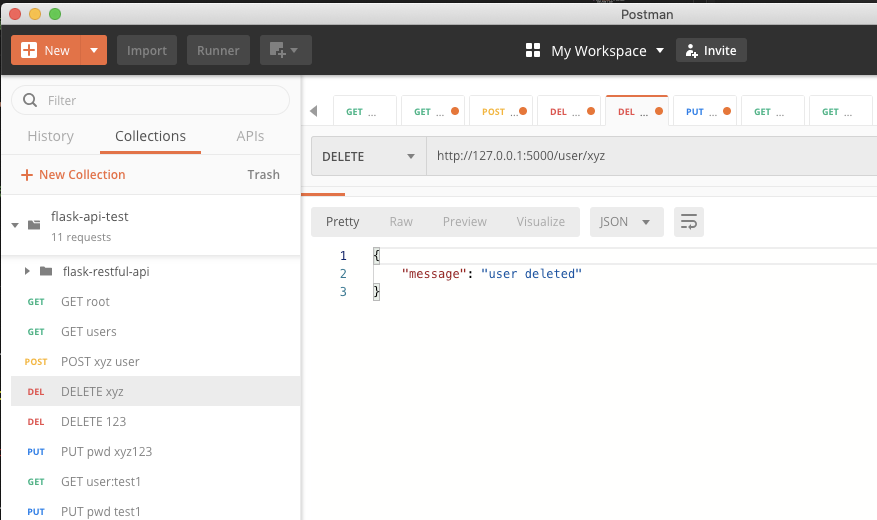
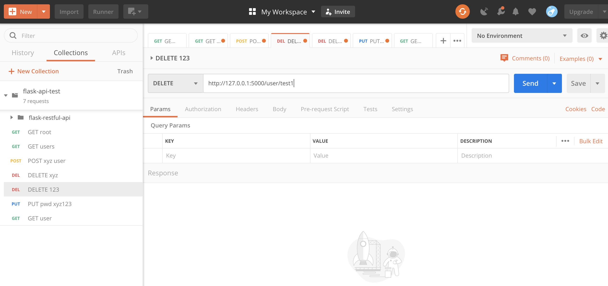
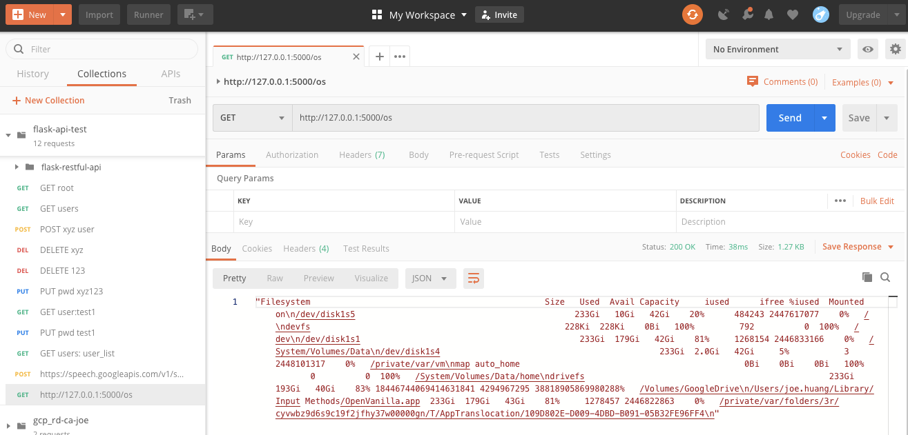
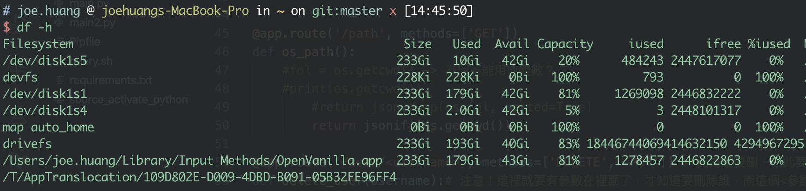

[Python] Flask API 後端實作 | Flask API Backend Handson
Status: in 75%
▌什麼是REST？
REST 是一種軟體架構風格，目的是幫助在各種不同軟體、程式在網路的世界中能夠互相傳遞訊息。透過統一的Protocol(HTTP 網頁協定)，程式端都可視為一個資源（resource）提供使用者使用(request)，以資源操作的概念，結合 URI、URL path 與 HTTP Method ，來傳送訊息。目的是使 URL path 更為簡潔、容易被理解，除了介面簡潔之外，RESTFul架構也有快取 cache 機制、提升 API 活用性等優點。

1. GET → Hello world
測試：root path
root path的意思就是根目錄，首先我們拿它來練習API存取的路徑，因此我們直接定義了"/"，讓它去使用Class Helloworld(Resource) ，而它的URL: http://127.0.0.1:5000/
@app.route('/') # 一個裝飾器
def helloworld():
return "hello world"建立個class，其中的method get是主要被呼叫的函式
class Helloworld(Resource):
def get(self):
return 'hello world'
api.add_resource(Helloworld, '/')結果：GET http://127.0.0.1:5000/
回傳hello world

2. POST User
測試：POST test
新設定一組路由到/user: 它的URL: [http://127.0.0.1:5000/user](http://127.0.0.1:5000/user，目的是把json)
目的是把json 格內的user, passwd存入user_list
@app.route(‘/user’, methods=[‘POST’])
def create_user():# 可以拿取後台傳過來的數據user = request.get_json() # 可以把json data傳換成字典 user_list.append(user) #然後就可以把傳進來的data存進list return jsonify({ # 回傳也要是json的格式 'message': 'user created' })POSTMAN by json format
將
json中的user xyz 帳密一起送進API
驗證：xyz 是否有被加入
這邊也有準備一隻class UserList以GET方式取得user_list資料
URL為
[http://127.0.0.1:5000/users](http://127.0.0.1:5000/user，目的是把json)class UserList(Resource):
def get(self): return user_listapi.add_resource(UserList, ‘/users’)
response內容確實回應了xyz 帳號與密碼

3. DELETE User
測試：DELETE xyz
使用即有的路由到[http://127.0.0.1:5000/user](http://127.0.0.1:5000/user，目的是把json) ， 但它的method 為DELETE
同一組路由的原因是我們要找到user_list中符合的user，才能做刪除的動作
@app.route(‘/user/
‘, methods=[‘DELETE’, ‘PUT’]) # 因為是要刪，因此要帶 <參數>
def delete_user(username):# 注意！這裡就要有參數在裡面了，才知道要刪除誰，而這個<參數>是跟著path指定的<參數>user_find = None for user in user_list: if user ['username'] == username: user_find = user if not user_find: return jsonify( {'message': 'user not found'} ) if request.method == 'DELETE': user_list.remove(user_find) return jsonify( {'message': 'user deleted'} ) elif request.method == 'PUT': new_passwd = request.get_json()#新的password 的對向就是json內的字典,也就是postman 拿到的raw:json user_list.remove(user_find) user_list.append( { 'username': username, 'password': new_passwd['password'] } ) return jsonify( {'message': 'user password updated'} )
驗證1：使用postman
接下來驗證的方法，使用postman跟curl二種
這裡先介紹postman，如何刪除 xyz user
- 使用postman，method改為
DELETE - URL + <參數>:
[http://127.0.0.1:5000/user/xyz](http://127.0.0.1:5000/user，目的是把json)

驗證2：使用curl
curl
curl -X POST -F link → useful
curl -X POST -H “Content-Type: application/json” http://127.0.0.1:5000/user -d ‘{“username”: “xyz-curl”, “password”: “xyz-curl”}’
delete2

4. GET + OS library
測試：GET df -h
上面的例子都是控制user，這邊新增一筆路由[http://127.0.0.1:5000/os](http://127.0.0.1:5000/user，目的是把json) ， 但它的method 一樣為GET，但行為是擷取系統的空間使用率，也就是執行 df -h
import os, datetime, json
@app.route('/os', methods=['GET']) # 一個裝飾器
def get_df():
out = os.popen('df -h').read()
return jsonify(out)驗證：使用postman
透過HTTP GET 得到我本機laptop的df -h訊息
雖然說有點亂，不過基本上是一樣的

原本laptop上的df -h
